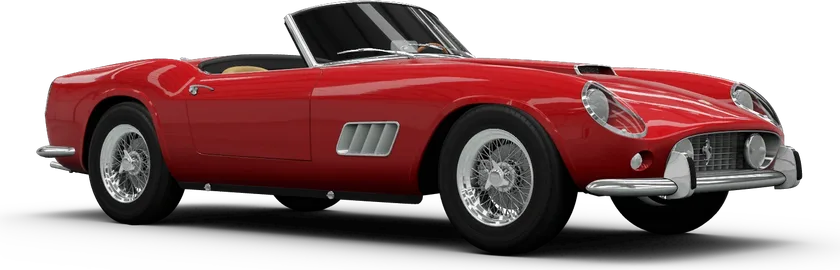

Ferrari

Ferrari
Ferrari 250 GT California
262 bhpRWD
View specsHide specs
- Engine
- 3.0L Naturally-Aspirated V12
- Power
- 262 bhp (195 kW)
- Torque
- 188 lb⋅ft (255 N·m)
- Drive type
- Rear-Wheel Drive
- Weight
- 2315 lbs (1050 kg)
Reference specifications from the original project. Variants may differ.